C4 Automatic and C4S Semi-Automatic Transmissions · 17-02-16
-
To keep the output shaft in alignment during the end play check, install the extension housing oil seal replacer tool or a front universal joint yoke in the extension housing.
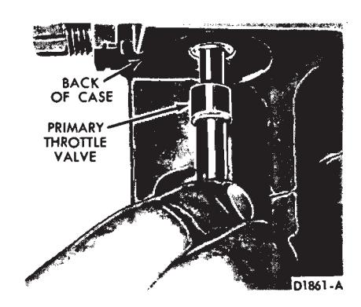
Fig. 28 — Removing or Installing Primary Throttle Valve—C4 Automatic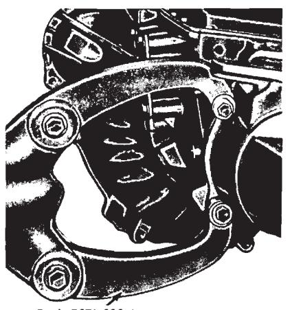
Fig. 29 — Transmission Mounted in Holding Fixture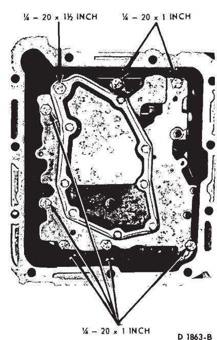
Fig. 30 — Control Valve Body Attaching Bolts -
Remove one of the converter housing-to-case attaching bolts and mount the dial indicator as shown in Fig. 32.
-
The input shaft is a loose part and has to be properly engaged with the spline of the forward clutch hub during the end play checking procedure. Move the input shaft and gear train toward the rear of the transmission case.
-
With the dial indicator contacting the end of the input shaft, set the indicator at zero (Fig. 32).
-
Insert a screwdriver behind the input shell (Fig. 32). Move the input shell and the front part of the gear train forward.
-
Record the dial indicator reading. The end play should be 0.008 to 0.042 inch. If the end play is not within specification, the selective thrust washers (Fig. 33) must be replaced as required. The selective thrust washers can be replaced individually to obtain the specified end play.
-
Remove the dial indicator and remove the input shaft from the front pump stator support (Fig. 34).
Removal of Case and Extension Housing Parts
-
Rotate the holding fixture to put the transmission in a vertical position with the converter housing up.
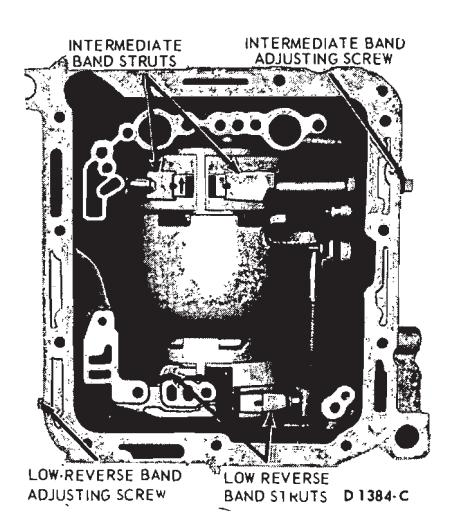
Fig. 31 — Band Adjusting Screws and Struts—Typical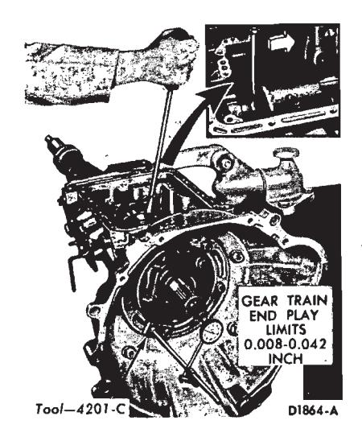
Fig. 32 — Checking End Play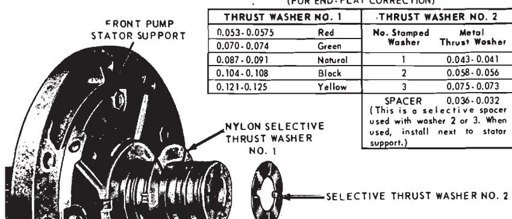
Fig. 33 — Selective Thrust Washer Locations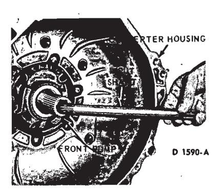
Fig. 34 — Removing or Installing Input Shaft -
Remove the five converter housing-to-case attaching bolts (Fig. 34). Remove the converter housing from the transmission case.
-
Remove the seven front pump attaching bolts. Remove the front pump by inserting a screwdriver behind the input shell (Fig. 35). Move the input shell forward until the front pump seal is above the edge of the case.
Remove the front pump and gasket from the case. If the selective thrust washer No. 1 did not come out with the front pump, remove it from the top of the reverse-high clutch.
-
Remove the intermediate and low-reverse band adjusting screws from the case. Rotate the intermediate band to align the band ends with the clearance hole in the case (Fig. 36). Remove the intermediate band from the case.
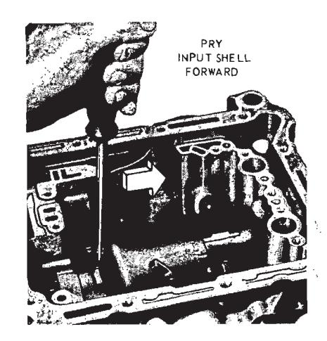
Fig. 35 — Removing Front Pump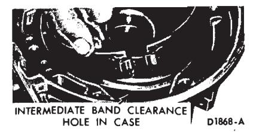
Fig. 36 — Position of Intermediate Band for Removal or Installation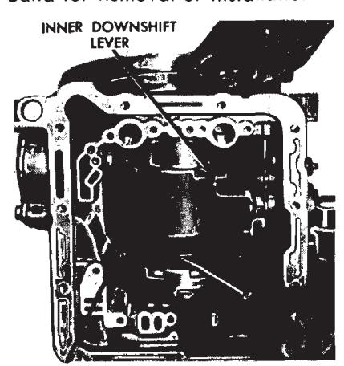
Fig. 37 — Lifting Input Shell and Gear Train -
Using a screwdriver between the input shell and rear planet carrier (Fig. 37), lift the input shell upward and remove the forward part of the gear train as an assembly (Fig. 38).
-
Place the forward part of the gear train in the holding fixture shown in Fig. 39.
-
With the gear train in the holding fixture, remove the reverse-high clutch and drum from the forward clutch (Fig. 40).
-
If thrust washer No. 2 (Fig. 33) did not come out with the front pump, remove the thrust washer from the forward clutch cylinder. If a selective spacer was used, remove the spacer. Remove the forward clutch from the forward clutch hub and ring gear (Fig. 40).
-
If thrust washer No. 3 (Fig. 40) did not come out with the forward clutch, remove the thrust washer from the forward clutch hub.
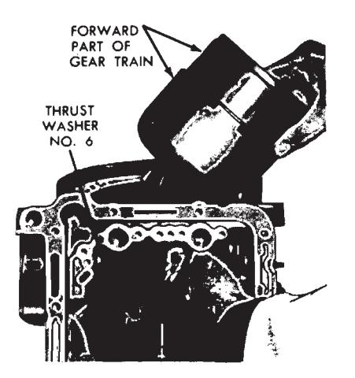
Fig. 38 — Removing or Installing Forward Part of Gear Train -
Remove the forward clutch hub and ring gear from the front planet carrier (Fig. 40).
-
Remove thrust washer No. 4 and the front planet carrier from the input shell.
-
Remove the input shell, sun gear and thrust washer No. 5 from the holding fixture.
-
From inside the transmission case (Fig. 38) remove thrust washer No. 6 from the top of the reverse planet carrier.
-
Remove the reverse planet carrier and thrust washer No. 7 from the reverse ring gear and hub (Fig. 41).
-
Move the output shaft forward and with the tool shown in Fig. 42 remove the reverse ring gear hub-to-output shaft retaining ring.
-
Remove the reverse ring gear and hub from the output shaft. Remove thrust washer No. 8 from the low and reverse drum.
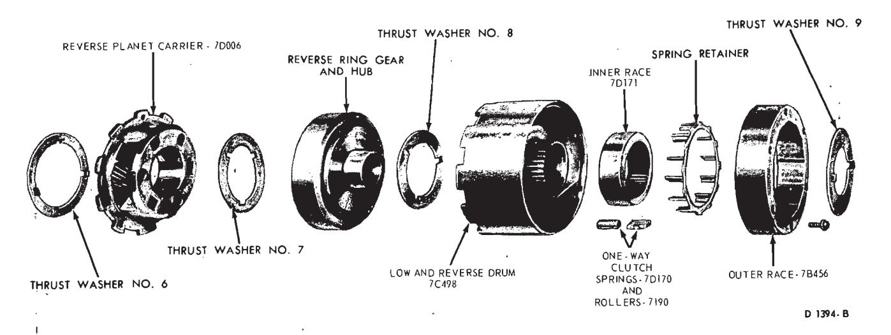
Fig. 41 — Lower Part of Gear Train Disassembled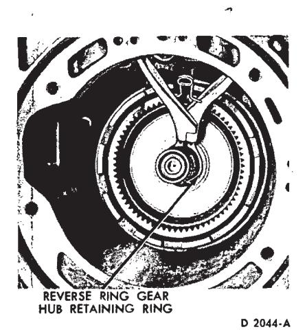
Fig. 42 — Removing or Installing Reverse Ring Gear Hub Retaining Ring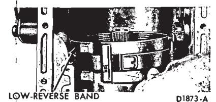
Fig. 43 — Removing or Installing Low-Reverse Band -
Remove the low-reverse band from the case (Fig. 43).
-
Remove the low-reverse drum from the one-way clutch inner race (Fig. 41).
-
Remove the one-way clutch inner race by rotating the race clockwise as it is removed.
-
Remove the 12 one-way clutch rollers, springs and the spring retainer from the outer race (Fig. 41). Do not lose or damage any of the 12 springs or rollers. The outer race of the one-way clutch cannot be removed from the case until the extension housing, output shaft and governor distributor sleeve are removed.
-
Remove the transmission from the holding fixture. Position the transmission on the bench in a vertical position with the extension housing up. Remove the four extension housing-to-case attaching bolts. Remove the extension housing and gasket from the case.
-
Pull outward on the output shaft and remove the output shaft and governor distributor assembly (if so equipped) from the governor distributor sleeve (Fig. 44).
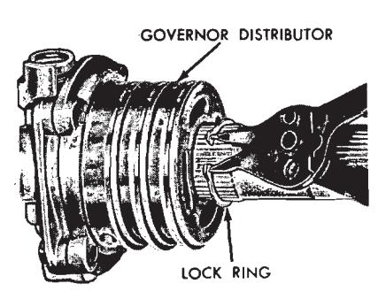
Fig. 44 — Removing or Installing Output Shaft and Governor Distributor—C4 Automatic -
On a C4 automatic transmission, remove the governor distributor lock ring from the output shaft (Fig. 45). Remove the governor distributor from the output shaft.
-
Remove the four distributor sleeve-to-case attaching bolts. Remove the distributor sleeve from the case. Do not bend or distort the fluid tubes as the tubes are removed from the case with the distributor sleeve.
-
Remove the parking pawl return spring, pawl, and pawl retaining pin from the case (Fig. 46).
-
Remove the parking gear and thrust washer No. 10 from the case.
-
Remove the six one-way clutch outer race-to-case attaching bolts with the tool shown in Fig. 47. As the bolts are removed, hold the outer race located inside the case in position. Remove the outer race and thrust washer No. 9 from the case (Fig. 41).
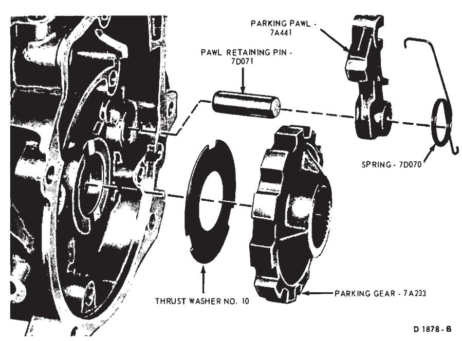
Fig. 46 — Parking Pawl, Return Spring Retaining Pin and Gear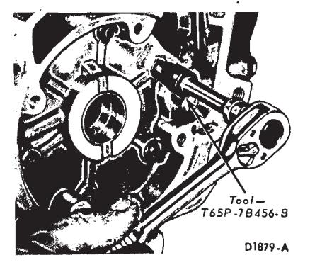
Fig. 47 — Removing One-Way Clutch Outer Race Attaching Bolts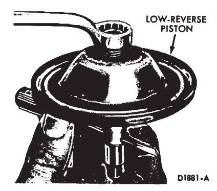
Fig. 49 — Removing or Installing Low-Reverse Servo Piston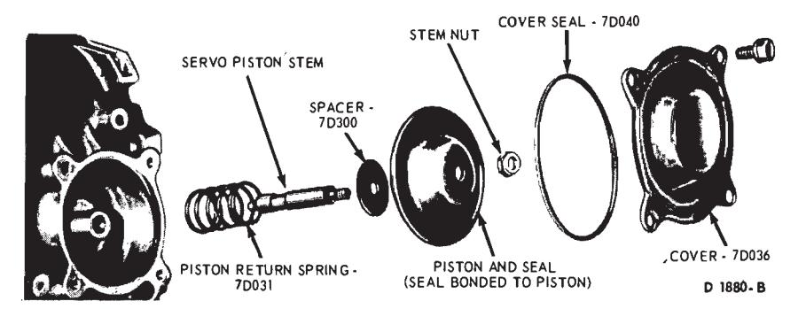
Fig. 48 — Low-Reverse Servo Disassembled